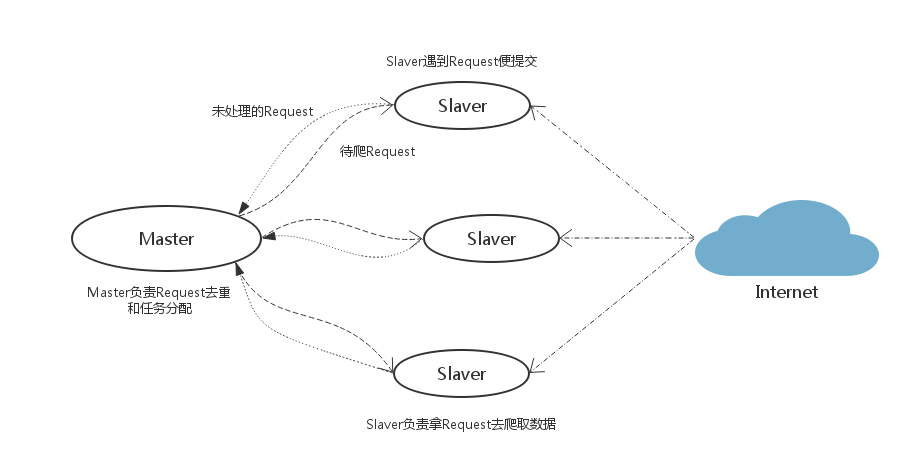
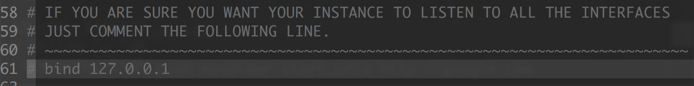
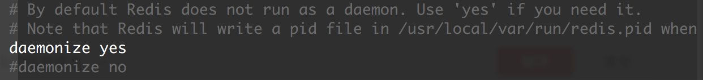
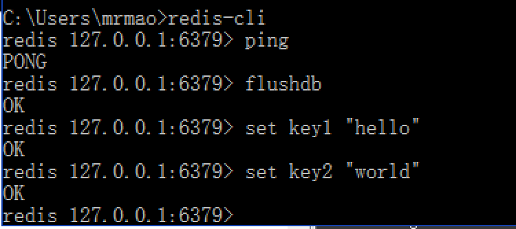
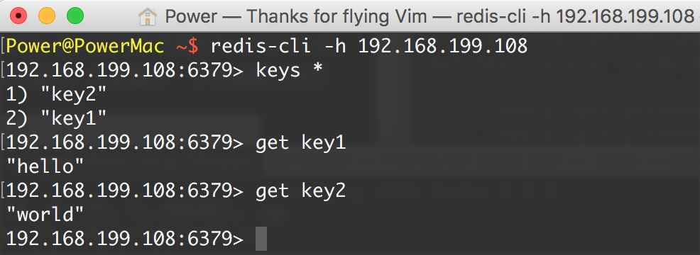
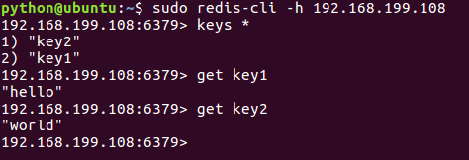
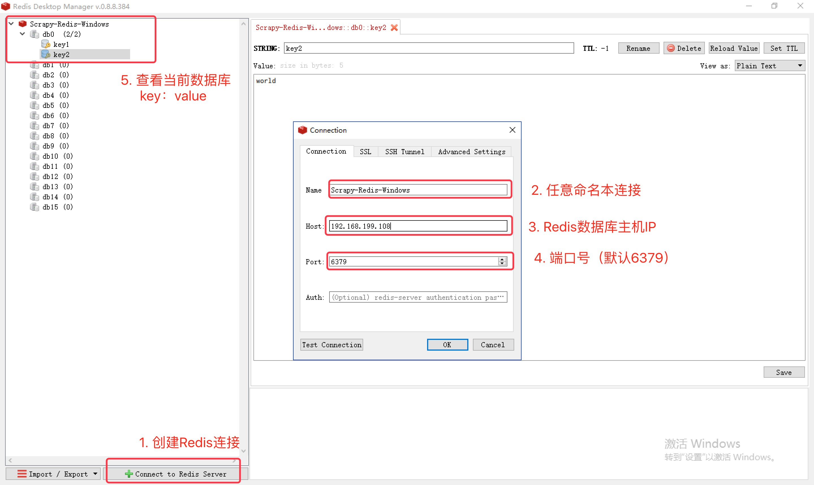
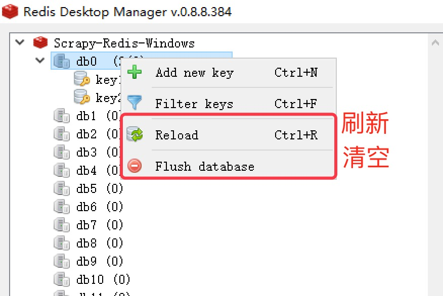

从零搭建Redis-Scrapy分布式爬虫

Scrapy-Redis分布式策略：
假设有四台电脑：Windows 10、Mac OS X、Ubuntu 16.04、CentOS 7.2，任意一台电脑都可以作为 Master端 或 Slaver端，比如：
Master端(核心服务器) ：使用 Windows 10，搭建一个Redis数据库，不负责爬取，只负责url指纹判重、Request的分配，以及数据的存储Slaver端(爬虫程序执行端) ：使用 Mac OS X 、Ubuntu 16.04、CentOS 7.2，负责执行爬虫程序，运行过程中提交新的Request给Master

首先Slaver端从Master端拿任务（Request、url）进行数据抓取，Slaver抓取数据的同时，产生新任务的Request便提交给 Master 处理；
Master端只有一个Redis数据库，负责将未处理的Request去重和任务分配，将处理后的Request加入待爬队列，并且存储爬取的数据。
Scrapy-Redis默认使用的就是这种策略，我们实现起来很简单，因为任务调度等工作Scrapy-Redis都已经帮我们做好了，我们只需要继承RedisSpider、指定redis_key就行了。
缺点是，Scrapy-Redis调度的任务是Request对象，里面信息量比较大（不仅包含url，还有callback函数、headers等信息），可能导致的结果就是会降低爬虫速度、而且会占用Redis大量的存储空间，所以如果要保证效率，那么就需要一定硬件水平。
一、安装Redis
安装Redis：http://redis.io/download
安装完成后，拷贝一份Redis安装目录下的redis.conf到任意目录，建议保存到：/etc/redis/redis.conf （Windows系统可以无需变动)
二、修改配置文件 redis.conf
打开你的redis.conf配置文件，示例:
非Windows系统:
sudo vi /etc/redis/redis.confWindows系统：
C:\Intel\Redis\conf\redis.conf
Master端redis.conf里注释
bind 127.0.0.1，Slave端才能远程连接到Master端的Redis数据库。
daemonize yno表示Redis默认不作为守护进程运行，即在运行redis-server /etc/redis/redis.conf时，将显示Redis启动提示画面；daemonize yes则默认后台运行，不必重新启动新的终端窗口执行其他命令，看个人喜好和实际需要。

三、测试Slave端远程连接Master端
测试中，Master端Windows 10 的IP地址为：192.168.199.108
Master端按指定配置文件启动
redis-server，示例：非Windows系统：
sudo redis-server /etc/redis/redis/confWindows系统：
命令提示符(管理员)模式下执行redis-server C:\Intel\Redis\conf\redis.conf读取默认配置即可。
Master端启动本地
redis-cli：
slave端启动
redis-cli -h 192.168.199.108，-h 参数表示连接到指定主机的redis数据库

注意：Slave端无需启动redis-server，Master端启动即可。只要 Slave 端读取到了 Master 端的 Redis 数据库，则表示能够连接成功，可以实施分布式。
四、Redis数据库桌面管理工具
这里推荐 Redis Desktop Manager，支持 Windows、Mac OS X、Linux 等平台：

